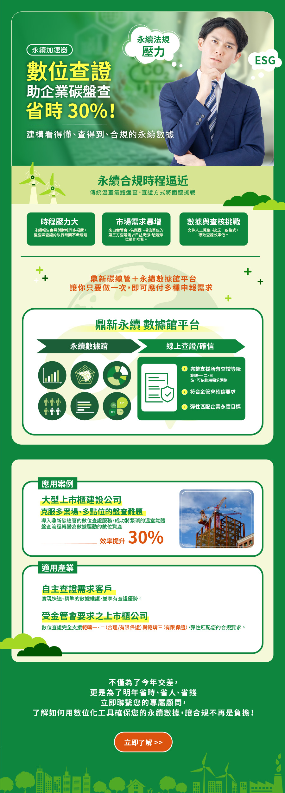
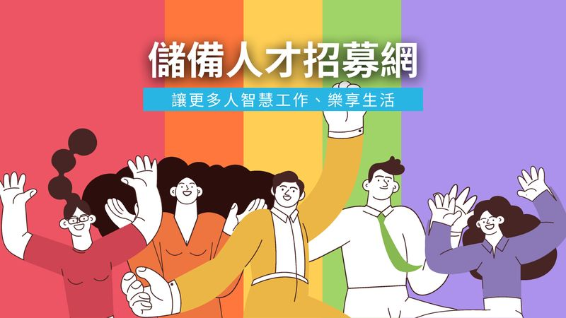

美術學系出身，七年都在做視覺：旅遊圖文、印刷完稿、電商主視覺、網站與介面。 一直以來，我負責的是把別人的題目做出來；接下來，我想往前一步，成為提出題目的人。 這一頁是我的方向、我的方法，以及我已經能親手落地的部分。
一檔展覽或活動，我會用這五步來想。前三步決定「值不值得做、做給誰」， 後兩步決定「做不做得出來」——而後兩步，正是我過去七年每天在做的事。
先問這件事為什麼值得被看見。一句話說得清楚的題目，才撐得起後面所有決定。
是誰會來、帶著什麼期待離開？同一個題目，給學生和給藏家，會是兩種展。
設計觀眾從進場到離場的節奏：動線、停留點、高潮，以及最後帶走的那一刻。
觀眾在哪裡遇見它？主視覺、文宣、社群、現場空間、線上頁面，用同一套語言說話。
我能親手做排時程、估物料、完稿輸出；展後用影像紀錄與線上展，讓它被看見得更久。
我能親手做標有我能親手做的步驟，對應下方「iii. 我已經會的」。
以下是自主提案，不是既有委託——自己命題、自己企劃，並親手做出主視覺、空間示意與線上頁面。 每個提案都照上面的五步走一遍，正在進行中。
從一個展覽命題開始，寫出策展論述，再一路推到觀眾會看見的每個接觸點。
比展覽更短、更需要「當下」的體驗：從報名、現場到活動後的延伸，設計一條完整的參與旅程。
企劃要能落地，靠的是接觸點與執行。以下照企劃流程整理我現有的能力，每類只放幾件代表作， 完整作品請到對應的作品集閱讀。
從一個主題發展出能延展的視覺語言，主視覺、社群圖文到活動宣傳都說同一種話。

能把一檔展覽延伸成線上展、把一場活動做成報名頁，而且自己切得了版。

讓視覺進入真實空間，安排動線、節奏與焦點，是最接近布展的一段實務。
用鏡頭記錄地方、光線與人，構圖、氛圍與敘事是展後延伸的基本功。
這一頁講方向與方法。平面設計與 UI/UX 各有一本完整作品集， 是我把企劃落地時真正會用上的兩隻手。
台南應用科技大學・美術學系畢業，受的是純美術的訓練——素描、繪畫、色彩與創作。
這是我看待所有視覺的根。
七年之間，我把這個根帶進不同的現場：旅遊的圖文、印刷的完稿、電商的主視覺、
工業與 SaaS 的介面。每一段都在練同一件事——把複雜的東西，變成好看又好懂的樣子。
現在，我想把這些能力往前推一步：不只做視覺，而是從命題開始，企劃一檔展覽或一場活動。
A designer with a fine-arts root, moving from making visuals to shaping the whole experience.
如果你的展覽或活動，
正在找一個能提出題目、也能親手把它做出來的人——
本作品集內容及圖片僅供設計交流參考，部分專案素材之權利歸屬原委託公司所有。